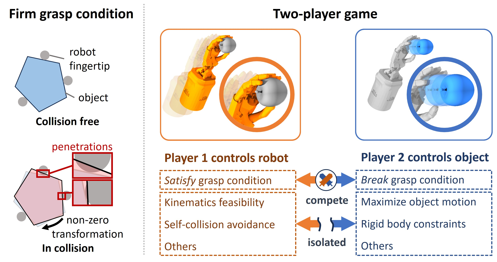
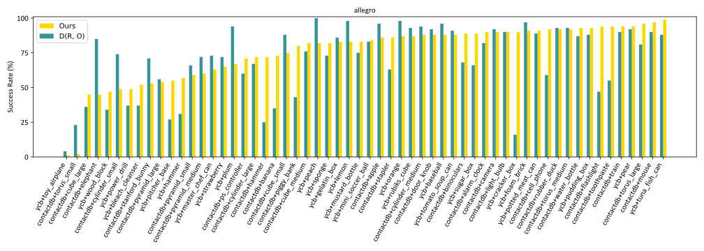
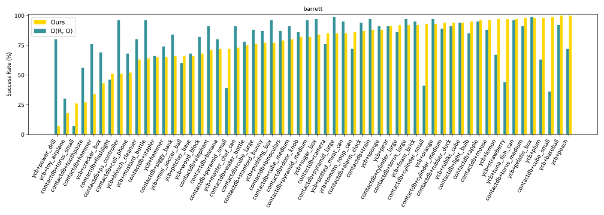
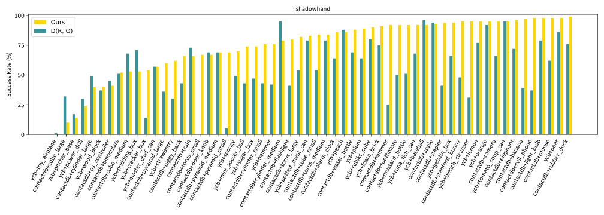
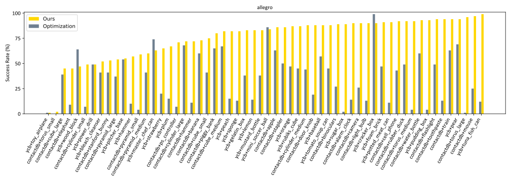
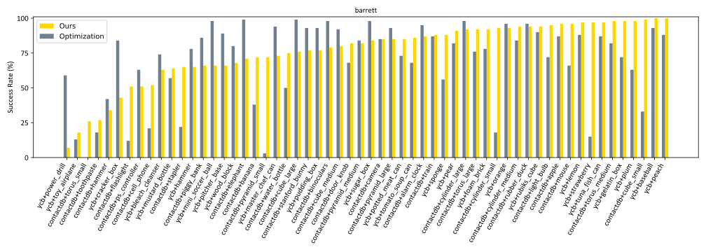
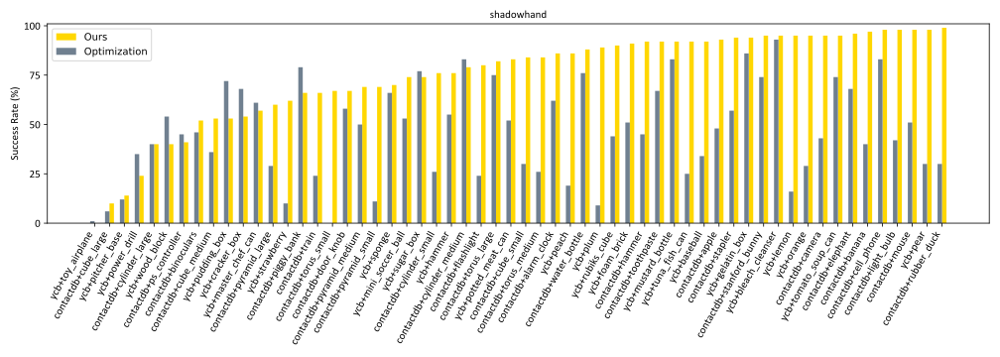

We focus on the problem of synthesizing grasps for multi-finger robot hands that, given a target object's geometry and pose, computes a hand configuration.
Existing approaches often struggle to produce reliable grasps that sufficiently constrain object motion, leading to instability under disturbances and failed grasps. A key reason is that during grasp generation, they typically focus on resisting a single wrench, while ignoring the object's potential for adversarial movements, such as escaping.
We propose a new grasp-synthesis approach that explicitly captures and leverages the adversarial object motion in grasp generation by formulating the problem as a two-player game. One player controls the robot to generate feasible grasp configurations, while the other adversarially controls the object to seek motions that attempt to escape from the grasp.
Simulation experiments on various robot platforms and target objects show that our approach achieves a success rate of 75.78%, up to 19.61% higher than the state-of-the-art baseline. The two-player game mechanism improves the grasping success rate by 27.40% over the method without the game formulation. Our approach requires only 0.28-1.04 seconds on average to generate a grasp configuration, depending on the robot platform, making it suitable for real-world deployment. In real-world experiments, our approach achieves an average success rate of 85.0% on ShadowHand and 87.5% on LeapHand, which confirms its feasibility and effectiveness in real robot setups.
An introduction video. Audio will be played when the video is played.

Pipeline overview: Our method relies on a firm grasp condition that once satisfied, any non-zero object transformation will result in object-robot penetration. The problem is formulated as a two-player game. Player 1 seeks to satisfy the firm grasp condition, while Player 2 attempts to break it. The two players compete specifically on this condition, whereas all other constraints are isolated within their respective optimization problems.
We conduct experiments on the full CMapDataset that contains 58 test objects across 3 robot platforms (Allegro, Barrett, and ShadowHand). On average, our approach achieves the grasp success rate of 75.78%, which is 7.51% higher than D(R,O) and 25.56% higher than optimization-based method without game mechanism. Below are the detailed object-wise comparison results on each robot platform.



Figure: Object-wise comparison between our method and D(R,O) on three robot platforms.



Figure: Object-wise comparison between our method and optimization-based method on three robot platforms.
In extreme case test, the robot is required to maintain a firm grasp on a target object that continuously changes its shape from a water bottle to a cylinder, a computer mouse, a Rubik's cube, and finally an apple.
Use the slider to interpolate between different object shapes.
On the LEAP Hand, our method achieved an average success rate of 87.5% across 40 trials, while on the ShadowHand it achieved an average success rate of 85.0%.
TODO